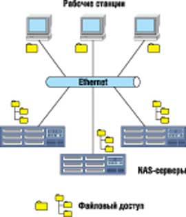
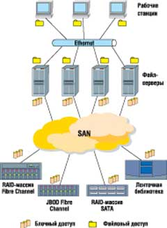
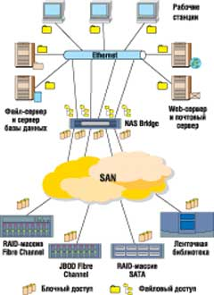
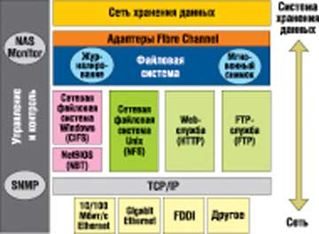

Денис Сенин,
инженер-дизайнер МКСК
Senin@mcsc.ru
Еще 20 лет назад, когда объем дискового пространства ПК был крайне мал по сравнению с современными жесткими дисками рабочих станций, ИТ-специалисты компаний сталкивались с огромными трудностями, выделяя особые серверы для выполнения новых сложных задач. Увеличение числа серверов неизбежно вело и к росту числа дисковых хранилищ, непосредственно подключаемых к серверам по шине SCSI. Сегодня объемы информации, обрабатываемой ежедневно в крупных компаниях, могут достигать нескольких терабайт. В этой ситуации интенсивный рост парка дисковых накопителей и серверов требует расширения штата высококвалифицированных специалистов и соответственно ведет к росту затрат на оплату их труда. Решением этой проблемы стало применение в корпоративной ИТ-инфраструктуре технологии Network Attached Storage (NAS).
Развитие технологии NAS
Изначально технология NAS применялась в системах хранения данных для решения определенного круга задач, включая предоставление относительно недорогого и легко масштабируемого дискового пространства пользователям локальных сетей в небольших компаниях и филиалах крупных организаций. В настоящее время устройства NAS применяются также для повышения эффективности существующих IP-сетей.
Первой реализацией технологии NAS стало создание NAS-серверов. Конструктивно NAS-сервер выполнялся в корпусе, предназначенном для монтажа в 19-дюйм стойку, и содержал от четырех до 15 дисков, одно- или двухпроцессорную системную плату со встроенным RAID-контроллером и один или несколько интерфейсов Ethernet. Для управления сервером и его дисками использовался Web-интерфейс и специальное ПО, установленное на сервере. RAID-контроллер обеспечивал организацию дисков в RAID-массивы, доступ к которым осуществлялся по локальной сети. Ограничение функций ОС до уровня управления дисками и пользователями позволяло снизить стоимость сервера, повышая вместе с тем его надежность. Однако установленные для ОС ограничения имели и обратную сторону: возникали трудности в управлении сервером, связанные, например, с авторизацией пользователей. Кроме того, недостаточно полно было задействовано дисковое пространство - оно не могло служить одновременно для обеспечения доступа к данным и выполнения других задач.
Доступ к информации, хранящейся на NAS-устройстве, осуществляется по протоколу TCP/IP. Как правило, такие устройства применяются в качестве централизованного файлового сервера или как альтернатива ленточным средствам резервного копирования данных. При подключении NAS-сервера к локальной сети используется технология Ethernet; при этом доступ к данным осуществляется на уровне файлов (рис. 1).
|  | Рис. 1. Схема работы с NAS-серверами.
|
Со временем решения на базе технологии NAS приобрели такую популярность, что некоторые организации начали задумываться о том, чтобы полностью отказаться от непосредственного подключения дисковых хранилищ к серверам. Вскоре стало очевидно, что увеличение количества NAS-серверов в информационной системе предприятия не приводит к пропорциональному расширению дискового пространства. Кроме того, по мере роста числа серверов у компаний стали появляться трудности с их администрированием. Наконец, основной недостаток этой стратегии заключался в том, что каждый сервер имел свой список пользователей и подключение к ресурсам различных NAS-серверов требовало знания множества паролей. Сокращение же числа паролей до минимума непременно вело к снижению уровня безопасности системы.
Преимущества NAS
Использование NAS-серверов имеет определенные преимущества перед традиционной технологией непосредственного подключения устройств хранения данных к серверам, что позволило устройствам NAS сохранить свою популярность и по сей день.
Во-первых, NAS-серверы отличаются простотой подключения к ним дополнительного дискового пространства. В случае обычного файл-сервера необходимо заранее предупредить пользователей, работающих с данными, которые хранятся на сервере, о том, что работа сервера будет приостановлена; затем выключить сервер, подключить дополнительные диски, перенести на них данные, перестроить RAID-массив и перенести данные обратно. При этом в течение нескольких часов доступ пользователей к данным будет ограничен. При использовании NAS-сервера задача значительно упрощается: нужно всего лишь подключить сервер к локальной сети, настроить сетевые интерфейсы, создать список пользователей или учетную запись сервера в домене и внести изменения в настройки пользователей, чтобы они могли работать с новыми сетевыми дисками. При этом сохраняется доступ пользователей к данным, которые в этой ситуации не нужно никуда перемещать, а для внесения изменений в конфигурацию сервера не требуются высококвалифицированные специалисты.
Во-вторых, одна из основных характеристик NAS-серверов - простота их администрирования. Большинство NAS-серверов имеет удобный Web-интерфейс, при помощи которого можно управлять сервером и дисковыми настройками и обеспечивать безопасность данных. Как правило, к оборудованию прилагается подробная документация. Кроме того, для обеспечения работы устройства не требуется специально обученный персонал, как для управления полноценным файл-сервером. Например, бухгалтерия предприятия может иметь доступ к своим данным на отдельном NAS-сервере, который легко отключить от локальной сети или вообще установить за пределами территории данной организации. Наконец, технология NAS дает возможность использовать сервер без дополнительной перенастройки, определив его параметры один раз, например, в процессе первоначальной установки.
В-третьих, решения на основе технологии NAS легко масштабируются и могут быть объединены в кластеры. Для создания дополнительного дискового пространства, доступ к которому будет возможен по локальной сети, достаточно либо увеличить дисковое пространство сервера, либо подключить дополнительный сервер к сети. Два одинаковых NAS-сервера, подключенных к локальной сети, можно также объединить в псевдокластер. В этом случае с одним из серверов будут постоянно работать пользователи, а другой будет дублировать функции основного. Если связь с основным сервером нарушена, администратору достаточно переподключить сетевые диски, и доступ пользователей к данным будет восстановлен. При наличии установленного на серверах специального ПО эта операция выполняется автоматически. Кроме того, серверы могут контролировать состояние друг друга и сообщать администратору о сбоях или других проблемах, например, о необходимости увеличить или освободить дисковое пространство.
Помимо перечисленных выше преимуществ, следует отметить, что NAS-решения обеспечивают недорогое дисковое пространство для хранения информации второстепенной важности и могут выступать в качестве промежуточных устройств хранения для резервного копирования данных, что позволяет не загружать основную дисковую систему, или "дублеров" отдельных устройств существующей дисковой подсистемы.
Концепция NAS Bridge
С появлением концепции сетей хранения данных (Storage Area Network, SAN) популярность NAS-решений несколько снизилась. Использование SAN (рис. 2) позволяло отделить хранение данных от управления ими и обеспечить более высокий уровень доступности информации и отказоустойчивости системы по сравнению с технологией NAS. Однако для управления большинством устройств, входящих в SAN, требовалось и до сих пор требуется специальное ПО, которое приходится устанавливать на разные серверы, поскольку зачастую ПО различных производителей несовместимо между собой. Более того, обеспечить файловый доступ к SAN можно только при помощи файловых серверов.
|  | Рис. 2. Сеть хранения данных SAN.
|
Таким образом, у NAS-решений оставалось одно неоспоримое преимущество, которого не было у SAN: простота управления и подключения устройств. Сложившаяся ситуация подтолкнула производителей систем хранения данных к созданию нового класса устройств, получивших название NAS Bridge.
NAS Bridge представляет собой устройство, не имеющее собственной интегрированной дисковой подсистемы и позволяющее подключать системы SAN к сети Ethernet. При этом сеть хранения данных служит основным хранилищем информации, а NAS Bridge обеспечивает высокопроизводительный файловый доступ к этому хранилищу для клиентов локальной сети (рис. 3). Такая реализация позволяет более полно использовать ресурсы IP-сетей и сетей SAN и совместить простоту управления NAS-сервером с возможностями SAN.
|  | Рис. 3. Сеть хранения данных и NAS Bridge.
|
Преимущества
NAS Bridge обладает целым рядом достоинств. Во-первых, данное устройство позволяет гибко распределять ресурсы. Используя IP-сети, можно организовать доступ к файлам независимо от того, на каком дисковом массиве они хранятся. Во-вторых, наличие нескольких точек доступа к ресурсам SAN упрощает процесс контроля и управления доступом к информации, а также снижает затраты на администрирование оборудования и сокращает время простоя системы в случае сбоя. Путем объединения нескольких устройств NAS Bridge в псевдокластер или нераспределенный кластер можно добиться непрерывного доступа к данным. NAS Bridge предоставляет также большие возможности для автоматизированного управления системой. В-третьих, данное устройство позволяет создавать многоуровневую систему хранения данных, отличающуюся гибкостью масштабирования и позволяющую легко увеличивать дисковое пространство. Таким образом, при помощи NAS Bridge можно более полно задействовать ресурсы системы, а следовательно, и обеспечить более эффективное вложение средств в ИТ-инфраструктуру предприятия.
Большинство решений в сфере ИТ можно рассматривать с точки зрения их соответствия трем параметрам: относительно низкая стоимость, быстродействие и качество. При этом чаще всего решение отвечает только двум из названных критериев, в то время как концепция NAS Bridge соответствует всем трем.
Низкая стоимость: стандартное устройство NAS Bridge ценой порядка 10 тыс. долл. позволяет управлять дисковыми массивами стоимостью до нескольких сотен тысяч долларов. Кроме того, для управления этим устройством, отличающимся простотой администрирования, не требуется специальных навыков, что позволяет существенно сократить затраты на оплату труда администраторов.
Быстродействие: NAS Bridge предназначен для максимально быстрого доступа к данным. Как правило, NAS Bridge реализуется на основе двухпроцессорных серверов с несколькими каналами SCSI или Fibre Channel, обеспечивающих разделение нагрузки, что позволяет добиться высокой пропускной способности канала и устранить узкие места шины данных. Кроме того, NAS Bridge работает с наиболее высокопроизводительными файловыми системами, такими, как XFS, поддерживающими функцию журналирования операций, что обеспечивает максимальную сохранность данных. Нередко эти файловые системы дополнительно оптимизируются под конкретные задачи заказчика.
Качество: NAS Bridge представляет собой достаточно простое и сбалансированное с аппаратной точки зрения устройство. При их выпуске комплектующие тестируются в течение достаточно долгого времени, после чего моделируется работа устройства под нагрузкой, имитирующей реальные условия. Такой подход позволяет исключить большую часть сбоев, вызванных проблемами с аппаратной частью. С программной точки зрения на NAS Bridge функционирует ОС с минимальным набором необходимых функций, протестированная в различных режимах работы. Нередко в этом качестве используются существующие ОС с открытым исходным кодом, что позволяет устранить ошибки, достичь высокой надежности, обеспечить необходимую функциональность в соответствии с требованиями заказчика.
Примеры реализации
Один из примеров реализации NAS Bridge - устройство NS700G NAS gateway компании EMC (http://www.emc.com). Оно представляет собой готовый к непосредственному подключению в SAN одно- или двухпроцессорный сервер с возможностью расширения. NS700G работает с дисковыми массивами EMC Symmetrix и CLARiiON CX300-700. В конфигурацию NS700G обычно входят два процессора Intel Pentium Xeon, до 4 Гбайт оперативной памяти; двухпортовые адаптеры Fibre Channel - два для подключения к дисковым массивам или к SAN и два для подключения к ленточным библиотекам; два последовательных порта для управления совместной работой нескольких устройств типа NAS Bridge, шесть портов Ethernet для подключения к локальной сети, два оптических порта Gigabit Ethernet и один 10/100/1000 для управления устройством по сети Ethernet. Доступ к данным, хранящимся на устройстве, осуществляется по протоколам NFSv3, CIFS и FTP. Кроме того, пользователям доступны многие сетевые протоколы и службы: NLM v1, v2 и v3, RIP v1-v2, SNMP, ICMP, NTP, аутентификация Kerberos и протокол LDAP.
Система поставляется с дублированными блоками питания и вентиляции, смонтированными в 19-дюйм шкафу, в котором находятся сама система, дисковые массивы, коммутатор, резервное питание и вентиляция. Такой конструктив уменьшает затраты времени на обслуживание системы. Для управления устройством служит фирменное ПО EMC Data Access Real Time (DART), оптимизированное для файловых операций и для работы с названными выше дисковыми массивами. Это ПО можно настроить для достижения максимальной производительности файловых операций или для работы с несколькими устройствами NAS Bridge NS700G в режиме отказоустойчивого кластера. На NS700G также устанавливается ПО DART File Server.
Компания IBM (http://www.ibm.com) предлагает свою реализацию концепции NAS Bridge - монтирующийся в 19-дюйм стойку сервер IBM TotalStorage NAS Gateway 500 высотой 4U, предназначенный для подключения к уже существующим сетям SAN. Вычислительная часть устройства выполнена на основе процессора POWER4+ и оперативной памяти объемом 2 Гбайт с возможностью расширения до 16 Гбайт. Для подключения к SAN используются два двухпортовых адаптера Fibre Channel, а для подключения к сетям Ethernet - восемь портов Gigabit Ethernet. Управление работой NAS Bridge осуществляется через три последовательных порта, а при построении отказоустойчивого кластера на базе нескольких IBM NAS Gateway 500 устройство может самостоятельно контролировать состояние узлов кластера. Системный диск IBM NAS Gateway 500 дублирован на случай выхода из строя основного диска.
Отличительная особенность этой системы - ее способность работать с дисковыми массивами, уже существующими в сети хранения данных, к которой требуется обеспечить файловый доступ. Устройство функционирует под управлением ОС AIX 5L 5.2B, специально доработанной и оптимизированной для выполнения файловых операций и передачи данных по сетевым протоколам. IBM NAS Gateway 500 обеспечивает доступ к ресурсам сетей SAN по протоколам NFS v2-v3, HTTP, FTP. Сервер IBM рассчитан на работу в основном в Unix-среде, что косвенно подтверждается опциональной поддержкой протокола CIFS и отсутствием поддержки протоколов аутентификации NTLM v4 и Kerberos. По индивидуальному заказу устройство может быть настроено для поддержки среды Windows, а также для работы в качестве элемента отказоустойчивого кластера и для удаленного зеркалирования данных с одного сервера на другой. В базовой версии NAS Gateway 500 поставляется с установленным ПО IBM Tivoli Storage Resource Manager agent и Tivoli SAN Manager. Для управления сервером служит удобный Web-интерфейс, доступный по протоколу HTTPS, а также командная строка, доступная через последовательный порт и по протоколу SSH.
Следующий пример, масштабируемое решение [:STRENDS] NAS Bridge, представляет собой законченный продукт, разработанный специалистами компании МКСК (http://www.mcsc.ru); архитектура этого решения показана на рис. 4. Оно обеспечивает доступ к информации, размещенной на централизованном дисковом хранилище, по общедоступным сетевым протоколам. NAS Bridge обслуживает обращения к данным по протоколам группы TCP/IP: CIFS (SMB), NFS, FTP, HTTP, и предоставляет доступ к административным функциям, используя протоколы HTTPS и SSH. С целью контроля за доступом пользователей к данным NAS Bridge поддерживает функцию создания списков пользователей с разграничением прав доступа к файлам и каталогам, обеспечивает квотирование доступного дискового пространства для каждого пользователя, а также интеграцию в существующие системы доменов Microsoft Windows NT 4.0 и/или Microsoft Active Directory.
|  | Рис. 4. Архитектура [:STRENDS] NAS Bridge.
|
Устройство [:STRENDS] NAS Bridge представляет собой программно-аппаратный комплекс, в основе которого лежит сервер начального уровня платформы Intel, предназначенный для монтажа в стандартную 19-дюйм стойку высотой 1U или 2U (в зависимости от числа установленных интерфейсов Fibre Channel). Минимальная конфигурация NAS Bridge обеспечивает доступ пользователей к данным по двум раздельным интерфейсам Gigabit Ethernet. Обмен данными с дисковыми массивами поддерживается по протоколу Fibre Channel 2 Гбит/c через один или два интерфейса, интегрированных в NAS Bridge. Функцию дискового хранилища может выполнять любой дисковый массив с интерфейсом Fibre Channel 2 Гбит/c. В качестве ОС выбрана свободно распространяемая версия ОС Linux, оптимизированная для выполнения функций файл-сервера. Все административные функции выполняются через интуитивно-понятный интерфейс встроенного Web-сервера по протоколу HTTPS, что позволяет проводить удаленные настройку и мониторинг системы, используя Интернет-каналы. Интерфейс, с которым работает администратор, полностью изолирован от данных, размещенных в системе хранения, обслуживаемой NAS Bridge.
В качестве бюджетного решения начального уровня, которое можно использовать совместно с [:STRENDS] NAS Bridge, специалисты МКСК рекомендуют дисковый массив FS4500 производства компании Adaptec. Данное устройство имеет 12 жестких дисков с интерфейсом SATA емкостью 250 Гбайт каждый. Дисковый массив FS4500 монтируется в стойку высотой 2U и оснащен собственным RAID-контроллером с интерфейсом удаленного управления. С целью масштабирования FS4500 можно добавлять до семи дополнительных дисковых модулей. Таким образом, максимальный общий объем дисковой подсистемы достигает 38,4 Тбайт.
***
Устройства NAS Bridge, выполняя исключительно файловые операции, позволяют более полно загрузить существующие ресурсы предприятия, повышая эффективность работы пользователей с критически важными данными. Предоставляя дешевый и удобный доступ к существующей на предприятии сети SAN, NAS Bridge экономят время и ресурсы, необходимые для управления дисковым пространством, позволяя сосредоточить все внимание и средства на основных задачах бизнеса. В дальнейшем данную технологию можно будет использовать для создания отказоустойчивых кластеров, объединения нескольких SAN в одну сеть хранения данных или для предоставления единого доступа на файловом уровне к нескольким элементам SAN при условии необходимого уровня безопасности данных и разграничения прав пользователей.